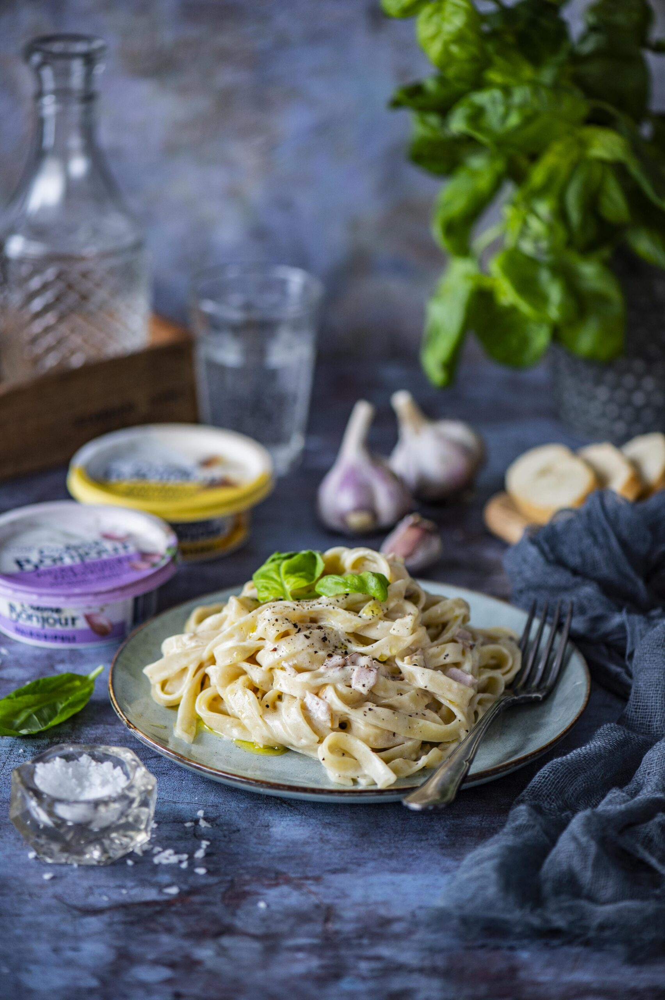

Delicious Pasta with Bacon and Cream Sauce

| Ingredients |
Amount |
| Pasta |
500g |
| Water |
2L |
| Bacon |
400g |
| Onion |
1 full onion |
| Garlic |
1 piece |
| Cream Sauce |
300g |
| Salt |
1tbsp |
| Pepper |
1tbsp |
| Parmesan Cheese |
100g |
| Fresh Basil |
as much as you like |
| Olive oil |
1tsp |
- Boil the water and add salt. Add pasta and boil around 12minutes.
- Pour some oil on the pan. Add onion, garlic and bacon. Once they are cooked, add cream sauce and a bit of pasta water.
- Mix the sauce with pasta, add salt and pepper.
- Serve it warmly, add parmesan and fresh basil.
HINTS
- Add some oil in the boiling water, so that the pasta wouldn´t stick together
- When You remove pasta from the water, add one cup of the water in the sauce, it gives better taste!